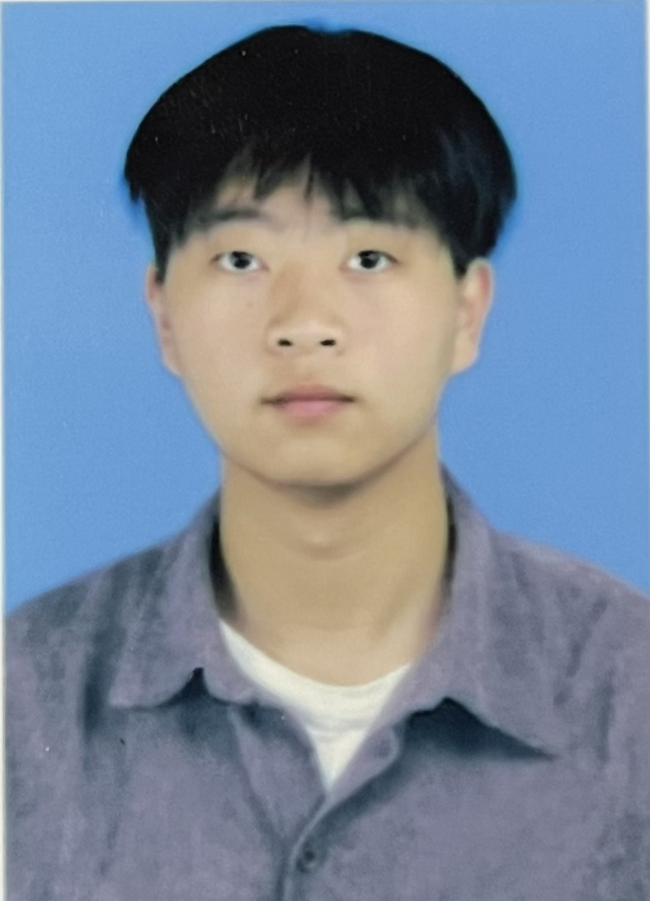

关于我
探索自然与设计的和谐共生

你好，我是何仔轩
我是一名浙江农林大学环境艺术设计专业的学生，热爱自然与设计的结合。通过参与各类景观设计项目和比赛，我不断探索人与自然环境的和谐共生之道。
我的设计理念源于对自然的敬畏和对生活品质的追求，致力于创造既美观又实用的环境空间。我相信，好的设计不仅能够美化环境，更能够改善人们的生活质量，促进人与自然的和谐共处。
在大学期间，我积极参与各类设计实践，包括景观构筑比赛、乡村景观改造提升规划设计比赛，以及实习期间的景观节点设计和花镜设计项目。这些经历不仅提升了我的专业技能，也深化了我对环境设计的理解和热爱。
姓名：何仔轩
性别：男
年龄：22岁
联系电话：13506725461
学历：本科
专业：环境艺术设计
学校：浙江农林大学（2022-2026）
个人简历
教育背景
浙江农林大学 本科 环境艺术设计
主修课程：环境设计、景观设计、园林设计、园林景观设计、景观规划与改造等
竞赛成果：
- 浙江农林大学2024大学生创新大赛 金奖
- 第十届"筱祥杯"浙江省风景园林学会大学生设计竞赛 一等奖
- "北林-南森"国际花园设计建造大赛 全国大学生花园设计建造竞赛 入围奖
学生工作：
- 担任班长3年，统筹班级日常事务，协调师生及同学间沟通，组织各类班级活动，锻炼了统筹协调和分工协作能力；
- 任学校通讯社文化创意部干事1年，参与活动海报、运动会会徽等设计工作，提升了设计实操与创意落地能力；
- 多次担任竞赛/设计项目小组组长，带领团队完成方案设计、落地执行等全流程工作，强化了团队管理和沟通协作能力。
个人优势
- 专业能力扎实，主修环境设计、景观设计、园林设计等核心课程，精通PS、CAD、SU、Lumion、AI等设计类专业软件，熟练掌握景观节点设计、工程建模、效果图渲染、施工图绘制等实操技能，适配工程技术设计相关工作需求；
- 具备丰富的项目实践与竞赛经验，参与多项设计类竞赛并斩获省级、校级金奖/一等奖，参与公园、乡村景观改造、河湖周边景观规划等设计工作，对生态修复、景观整治类工程设计有实操认知；
- 综合能力突出，拥有多年学生干部及项目小组组长经历，具备优秀的统筹协调、分工协作和团队沟通能力，能高效配合团队完成工程设计相关任务；
- 工作态度踏实认真，具备较强的学习能力和执行力，曾在规划设计研究院参与实地调研、工程设计等实习工作，熟悉设计岗位工作流程，能快速适应职场工作节奏；
- 熟练使用办公软件，英语能力达标，专业课程无挂科，符合企业校园招聘基础要求，认同建筑行业发展理念，服从公司组织安排。
专业技能
项目设计经验
通过课程学习、竞赛及实习，参与多项工程类设计项目，涵盖公园设计、园林铺装设计、古典园林设计、乡村景观规划与改造提升设计、景观节点设计、景观规划设计等，同时涉及花镜设计、导视系统设计、节点建筑设计等配套设计工作，具备从方案构思、图纸绘制到模型搭建、效果渲染的全流程设计实操能力，对生态修复、景观整治类工程的设计逻辑有清晰认知。
实习经历
浙江大学城乡规划设计研究院有限公司 景观设计实习生
- 参与工程前期实地调研，配合团队完成项目现场数据采集、需求分析，为项目总体定位规划设计提供基础支撑；
- 参与项目节点设计、铺装设计等核心工作，协助完成方案初稿绘制与优化，贴合工程实际设计需求；
- 熟练运用SU完成工程模型建模，使用Lumion进行效果图渲染，用CAD绘制施工相关图纸，保障设计成果落地；
- 配合设计师完成设计资料整理、方案汇报素材制作等工作，高效完成团队分配的辅助任务。
浙江大学城乡规划设计研究院有限公司 景观设计实习生
- 协助设计师完成工程节点、景观小品、植物花镜等设计工作的效果图渲染，使用Lumion优化画面效果，匹配工程设计展示需求；
- 负责SU模型制作与调整，根据设计方案精准搭建工程模型，保障模型与设计图纸一致性；
- 参与设计方案的内部讨论，提出合理化优化建议，配合团队完成设计方案的修改与完善。
校园经历
班长
担任班长3年，统筹班级日常事务，协调师生及同学间沟通，组织各类班级活动，锻炼了统筹协调和分工协作能力；多次担任竞赛/设计项目小组组长，带领团队完成方案设计、落地执行等全流程工作，强化了团队管理和沟通协作能力。
学校通讯社文化创意部干事
参与活动海报、运动会会徽等设计工作，提升了设计实操与创意落地能力。
竞赛比赛成果
浙江农林大学2024大学生创新大赛金奖
第十届"筱祥杯"浙江省风景园林学会大学生设计竞赛一等奖
"北林-南森"国际花园设计建造大赛 | 全国大学生花园设计建造竞赛入围奖
设计理念
尊重自然
设计应当尊重自然规律，顺应地形地貌，保护生态环境，实现人与自然的和谐共生。
以人为本
设计应关注人的需求和体验，创造舒适、安全、具有人文关怀的环境空间。
创新思维
在尊重传统的基础上，勇于创新，探索新的设计语言和表现形式，创造独特的空间体验。
可持续发展
注重生态环保，选择可持续材料和设计方法，创造具有长期价值的环境空间。